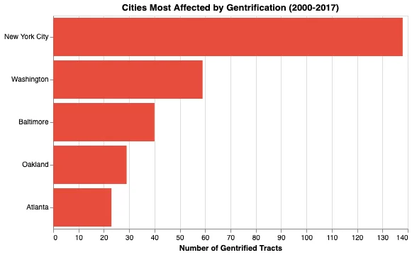
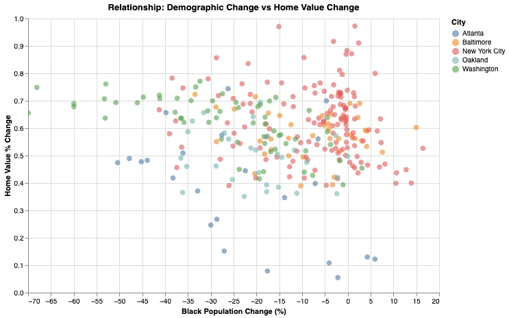
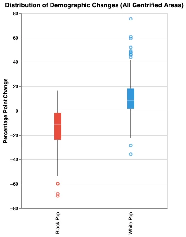
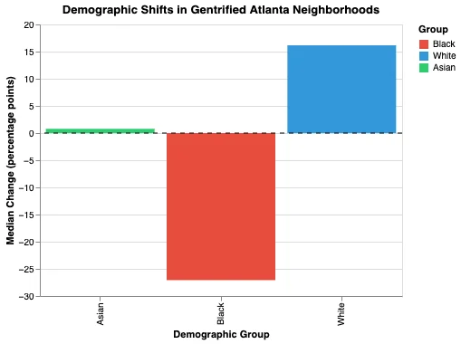
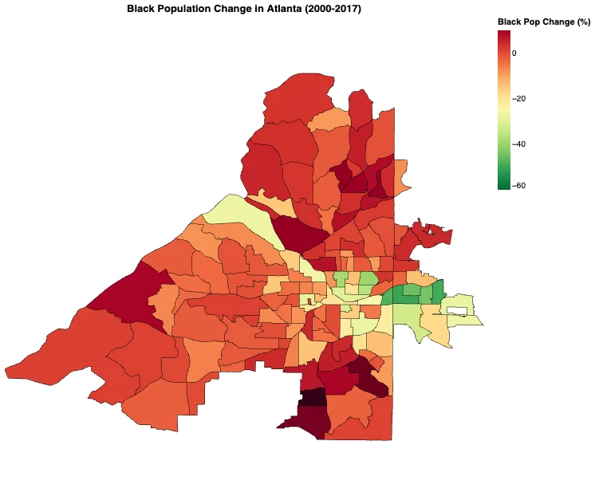
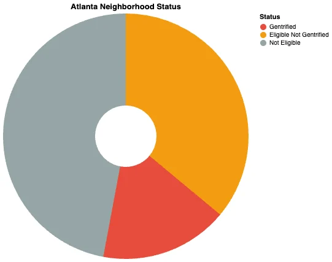
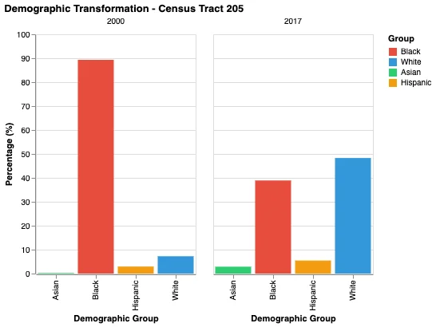
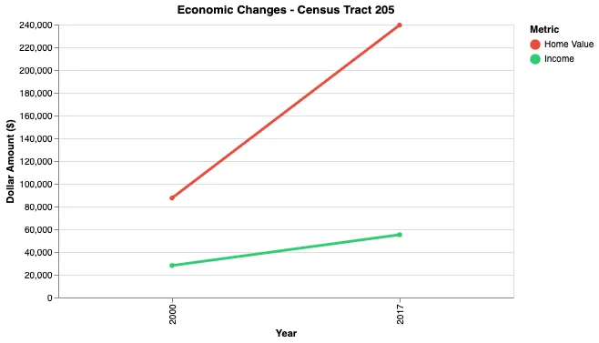

Overview
Gentrification is usually described. Here it is measured.
Atlanta, Baltimore, New York City, Oakland and Washington, D.C., analysed at census-tract level. The argument of the piece is that demographic change and economic change have to be read against each other: a tract where home values doubled and composition held is a different story from one where both moved at once, and only the pairing distinguishes them.
Which cities were most affected
Ranking the five cities by the share of tracts meeting the gentrification classification gives the shape of the problem before any individual tract is examined.

The central relationship
This is the analytical centre of the piece: demographic change plotted against home-value change, one point per tract. The spread matters as much as the trend, because it shows how many tracts appreciated without displacement and how many did both.

Distribution and composition




One tract, closely
Aggregates hide people. Census Tract 205 in Atlanta is traced in both demographic and economic terms so the same period can be read as a single neighbourhood's experience rather than a distribution.


Method
Classification → tracts scored on demographic and home-value movement
Geography → GeoPandas joins tract attributes to boundaries
Output → static charts plus interactive Altair views
A note on the classification
"Gentrifying" is a threshold decision, not a fact in the data. The tract-level scatter is included precisely so the threshold can be argued with: the underlying continuum is visible, and a reader who would draw the line elsewhere can see what that would change.